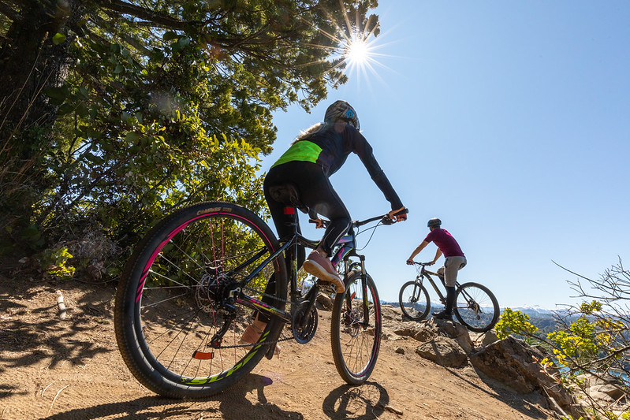

Actividades
A continuación le mostramos una serie de posibles actividades que usted podría disfrutar durante su estadía en Bariloche.
Todas estas actividades se encuentran en la ciudad de San Carlos de Bariloche.
Cerro Otto:
En Teleférico Cerro Otto se puede disfrutar de distintas actividades tanto en el interior como en el exterior, muchas de ellas incluidas en el voucher de ascenso/descenso.
En el interior:
Donde podra disfrutar de una exclusiva Confitería Giratoria, donde podra degustar exquisita gastronomía durante todo el día.
En el Exterior:
Pistas de trineos para deslizarse por la pendiente de la montaña en época invernal; Funicular de la Cumbre, único medio de transporte en la cima de la montaña; Caminatas con raquetas para nieve o trekking cuando la nieve se retira; Circuito Otto: Puente Colgante y Laberinto del Bosque; Deck y Terrazas Panorámicas donde poder disfrutar de las espectaculares vistas del entorno natural.
Cerro Catedral:
Ofrece una amplia infraestructura de servicios para la práctica de deportes invernales. Está abierto todo el año y cuenta con 32 medios de elevación (entre aerosillas, telecabinas y medios de arrastre)Donde podés practicar múltiples actividades de aventura para toda la familia, escalada, trekking, tirolesa y magic donas. Disfrutá de hermosas vistas, gastronomía y un área de ruedas sin motor. Además, podés disfrutar de diferentes eventos de descenso en Mountain Bike y otros deportes.


